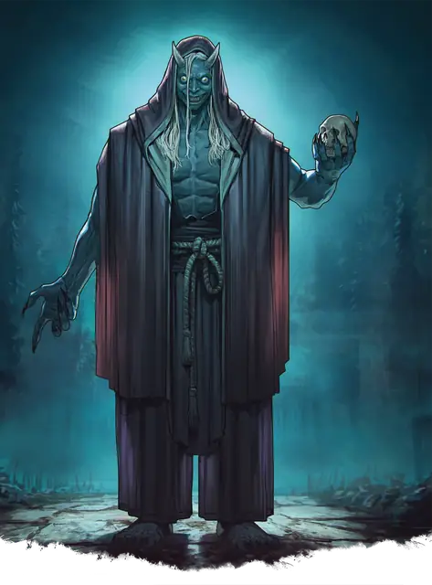

Они
Oni
Большое Исчадие, Принципиальное Злое

Класс Защиты 17 Инициатива +0 (10)
Хиты 119 (14к10 + 42)
Скорость 30 футов, Полёта 30 футов (парит)
| мод | спас | ||
|---|---|---|---|
| СИЛ | 19 | +4 | +4 |
| ЛОВ | 11 | +0 | +3 |
| ТЕЛ | 16 | +3 | +6 |
| мод | спас | ||
|---|---|---|---|
| ИНТ | 14 | +2 | +2 |
| МДР | 12 | +1 | +4 |
| ХАР | 15 | +2 | +5 |
Сопротивление урону Холод
Чувства Тёмное зрение 60 футов, пассивное Восприятие 14
Языки Общий, Великаний
Опасность 7 (2 900 опыта; БВ +3)
Особенности
Регенерация. Они восстанавливает 10 Хитов в начале каждого своего хода, если у него остаётся хотя бы 1 Хит.
Действия
Мультиатака. Они совершает две атаки Когтями или Лучом кошмаров. Он может заменить одну из этих атак использованием Сотворения заклинаний.
Когти. Бросок рукопашной атаки: +7, досягаемость 10 фт. Попадание: 10 (1к12 + 4) Рубящего урона плюс 9 (2к8) Некротического урона.
Луч кошмаров. Бросок дальнобойной атаки: +5, дистанция 60 фт. Попадание: 9 (2к6 + 2) Психического урона, и цель становится Испуганной до начала следующего хода они.
Перевоплощение. Они либо перевоплощается гуманоида Среднего или Маленького размера или Великана Большого размера, либо возвращается в свою истинную форму. Его статистика, кроме размера, не меняется в зависимости от формы. Снаряжение, которое он носит или несёт, не трансформируется.
Сотворение заклинаний. Они сотворяет одно из следующих заклинаний, не нуждаясь в Материальных компонентах (заклинательная характеристика — Харизма, Сл спасброска заклинаний 13):
1/день каждое: Газообразная форма, Очарование личности, версия 2-го уровня, Тьма, Усыпление
Бонусные действия
Невидимость. Они сотворяет Невидимость на себя, не нуждаясь в компонентах (заклинательная характеристика — та же, что для Сотворения заклинаний).
Бонус мастерства +3
Среда обитания Город, Леса
Сокровища Оружейные
Они
Порок, тянущийся к пороку
О́ни — неуловимые сущности, что населяют мрачные чащобы и другие необжитые края. Принимая облик безобидного существа или передвигаясь невидимыми, они проникают в селения и выходят на пустынные дороги. Часто они изводят набожных личностей, испытывая пределы их благочестия, или мучают себялюбцев, карая их за пороки. Мудрые общины нередко держат статуи-защитники, проводят ежегодные обряды или соблюдают местные суеверия, чтобы отвадить о́ни. В редких случаях о́ни может постепенно сдружиться с такой общиной и поколениями оберегать её от иных угроз.
О́ни терзают деревни, что не выказывают почтения им или другим сверхъестественным силам. Совершите бросок по таблице «Напасти о́ни» или определите сами, как о́ни досаждает поселению.
Напасти о́ни
| к4 | О́ни изводит жителей тем, что… |
| 1 | Очаровывает их, заставляя творить гадкие проделки. |
| 2 | Захватывает мост, ворота, святилище или тропу и пытается сожрать всякого, кто приблизится. |
| 3 | Приманивает к поселению других чудовищ. |
| 4 | Бьёт в барабаны, никому не давая уснуть. |